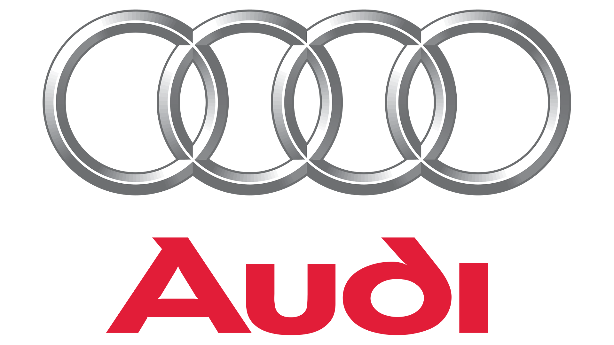
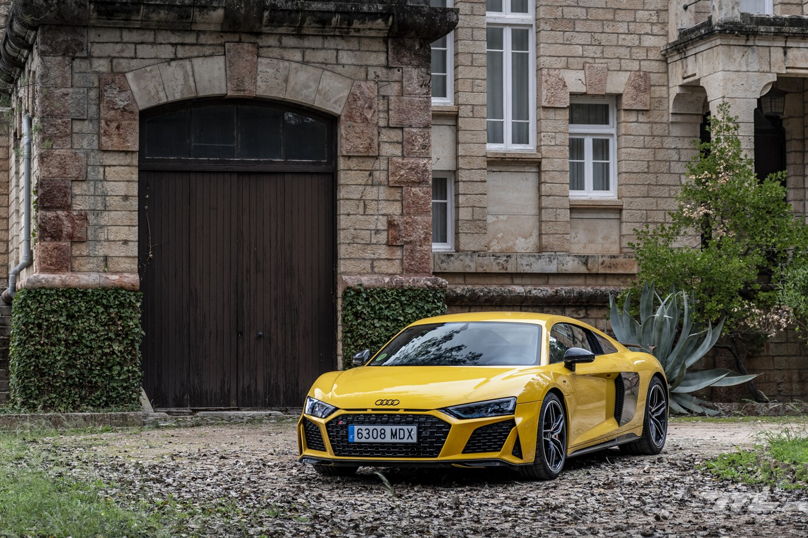

Inicio
BMW
Mercedes
Audi
Toyota
AUDI

Audi es una empresa multinacional fabricante de automóviles de gama alta de
lujo
y deportivos. Su sede central se encuentra en Ingolstadt, Baviera, Alemania. Desde 1965 forma parte del Grupo
Volkswagen
.
Lo mejor de nosotros
R8 V10 Performance

AUDI R8
Escucha el Audi R8 desde donde quieras
Estas muy cerca de tener nuestra joya
Cotizalo Ahora